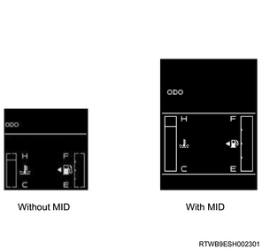

Caution
Note
Caution
1. Turn ON the ignition switch.
2. Turn ON a scan tool.
3. Select the Diagnostics.
4. Select the body.
5. Select the meter.
6. Select the programming.
7. Select Download Vehicle Configuration Data.
Note
8. Select Module Information.
Caution
Note
| Setting Item | Setting Value | |
| 1 | SVS Indicator Light | Available |
| 2 | DPD Indicator Light | Not Available |
Note
| Setting Item | Setting Value | Setting Standard | ||
| Available | Not Available | |||
| 1 | Clock Display | With Clock Display | Without Clock Display | Select Available in models without an Isuzu genuine audio system. |
| 2 | Glow Plug Indicator Light | With GLOW Indicator Light | Without GLOW Indicator Light | Select Available in models except for Thailand. |
| 3 | ESC Indicator Light | With ESC Indicator Light | Without ESC Indicator Light | Select Available in models with ESC option. |
| 4 | ABS Indicator Light | With ABS Indicator Light | Without ABS Indicator Light | Select Available in models with ABS option. |
| 5 | Cruise Control Indicator Light | With cruise Control Indicator Light | Without Cruise Control Indicator Light | Select Available in models with Cruise Control option. |
| 6 | 4WD indicator light | With 4WD Indicator Light | Without 4WD Indicator Light | Select Available in models with 4WD. |
| 7 | Key Remind Warning | With Key Remind Warning | Without Key Remind Warning | Select Available in models with Key Remind option. |
| 8 | Over Speed Warning Function | With SPEED ALARM | Without SPEED ALARM | Select Available in models for Saudi Arabia. |
| 9 | Seat belt reminder function | With Seat Belt Reminder | Without Seat Belt Reminder | Select Available in models with Roof Rail & Side Air Bag option. |
| 10 | Back Shift Warning | With Back Shift warning | Without Back Shift Warning | Select Available in models with Aisin 6-speed MT. |
9. Turn OFF the ignition switch.
Note
10. Turn ON the ignition switch.
11. Check display of the meter.
Note

Note
1. Turn ON the ignition switch.
2. Turn ON a scan tool.
3. Select the Diagnostics.
4. Select the Body.
5. Select the meter.
6. Select the Programming.
7. Select Clock Display Setting
Note
8. Turn OFF the ignition switch.
Note
9. Turn ON the ignition switch.
10. Check display of the meter.
Note
11. Turn ON the ignition switch.
12. Turn ON a scan tool.
13. Select the Diagnostics.
14. Select the body.
15. Select the meter.
16. Select the programming.
17. Select Vehicle Configuration Data Setting.
Note
Caution
Note
| Setting Item | Setting Value | |
| 1 | SVS Indicator Light | Available |
| 2 | DPD Indicator Light | Not Available |
Note
| Setting Item | Setting Value | Setting Standard | ||
| Available | Not Available | |||
| 1 | Clock Display | With Clock Display | Without Clock Display | Select Available in models without an Isuzu genuine audio system. |
| 2 | Glow Plug Indicator Light | With GLOW Indicator Light | Without GLOW Indicator Light | Select Available in models except for Thailand. |
| 3 | ESC Indicator Light | With ESC Indicator Light | Without ESC Indicator Light | Select Available in models with ESC option. |
| 4 | ABS Indicator Light | With ABS Indicator Light | Without ABS Indicator Light | Select Available in models with ABS option. |
| 5 | Cruise Control Indicator Light | With cruise Control Indicator Light | Without Cruise Control Indicator Light | Select Available in models with Cruise Control option. |
| 6 | 4WD indicator light | With 4WD Indicator Light | Without 4WD Indicator Light | Select Available in models with 4WD. |
| 7 | Key Remind Warning | With Key Remind Warning | Without Key Remind Warning | Select Available in models with Key Remind option. |
| 8 | Over Speed Warning Function | With SPEED ALARM | Without SPEED ALARM | Select Available in models for Saudi Arabia. |
| 9 | Seat Belt Reminder Function | With Seat Belt Reminder | Without Seat Belt Reminder | Select Available in models with Roof Rail & Side Air Bag option. |
| 10 | Back Shift Warning | With Back Shift warning | Without Back Shift Warning | Select Available in models with Aisin 6-speed MT. |
18. Turn OFF the ignition switch.
Note
19. Turn ON the ignition switch.
20. Check display of the meter.
Note